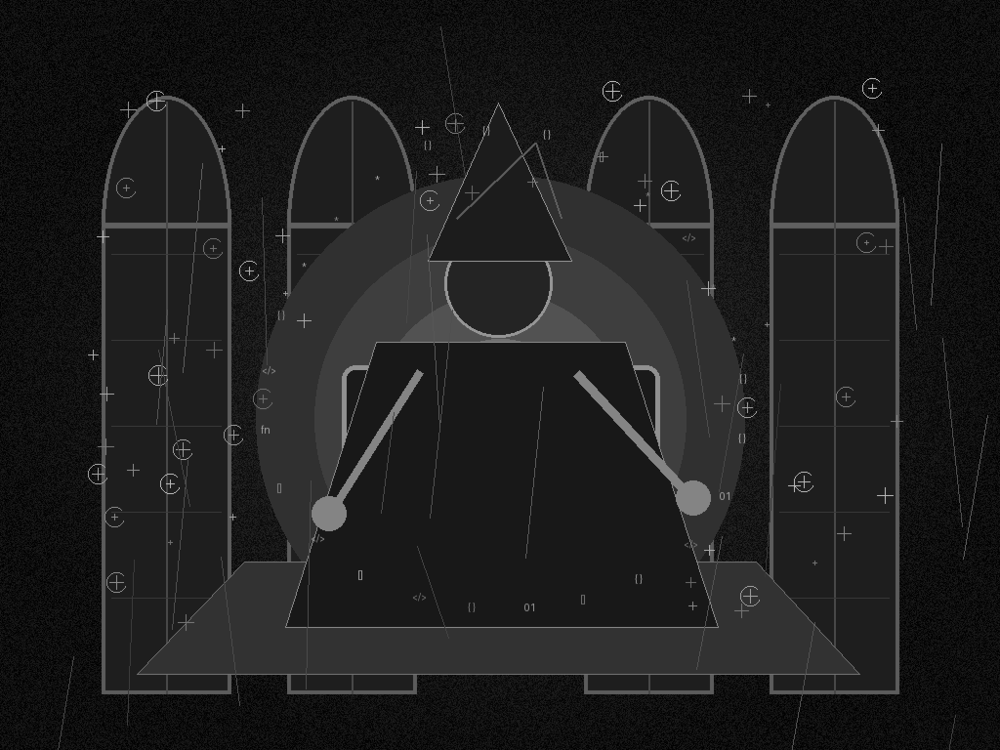

Morning Edition
6:00 AM CDTFinance & Markets
Oil Pulls the Tape Back Toward Inflation
U.S. futures softened this morning as crude jumped on the 11th consecutive night of U.S.-Iran strikes. The market had just enjoyed a chip-led bounce, but Brent near the mid-$90s turns the screen red in a different way: every AI multiple now has to share the room with energy inflation and rate-risk math.
— Source: MarketWatch live markets coverage and AP global markets report, July 22, 2026Mega-Deals Still Carry the M&A Grimoire
PwC says U.S. M&A deal value reached $1.2 trillion in the first five months of 2026, nearly double last year's pace, even as volume dipped. The pattern is not broad animal spirits; it is concentrated conviction, with boards paying up for assets that can survive tariffs, oil shocks, financing stress, and AI disruption.
— Source: PwC U.S. Deals 2026 midyear outlook, July 2026Private Equity Gets Pickier
Private equity remains active, but it is moving with a narrower wand. PwC says U.S. PE deal volume fell 34% in H1 while average deal size rose nearly fourfold. Continuation vehicles and secondaries are doing more of the liquidity work, and DPI keeps replacing theoretical IRR as the LP spell that actually matters.
— Source: PwC private equity deals outlook, July 2026World & US
U.S.-Iran Strikes Enter an 11th Night
AP reports another round of U.S. strikes on Iranian military sites while Iran answered with missile and drone attacks in the region. The Strait of Hormuz is again the pressure valve for global anxiety: shipping risk, oil prices, diplomacy, and military escalation are all now compiled into the same volatile loop.
— Source: AP on U.S.-Iran escalation, July 22, 2026Drug Tariffs Get a Two-Year Fuse
Trump announced that imported generic drugs would stay tariff-free until August 2028, then face a 100% duty and a 200% duty a year later if manufacturers do not reshore. The delay is the tell: markets have time to model it, supply chains have time to lobby it, and patients may still be the unresolved edge case.
— Source: Wall Street Journal tariff coverage, July 22, 2026Medicaid Funding Freeze Hits Two States
The Trump administration is deferring more than $1 billion in Medicaid payments to California and Minnesota, citing suspected fraud and billing concerns. State officials are pushing back, saying the federal government has not shown the data. It is a policy fight with an immediate operational surface: care providers still need cash flow.
— Source: AP on Medicaid payment deferrals, July 22, 2026
The Wednesday Scrying Lens: a gothic code-mage watches oil, chips, rockets, stablecoins, and policy runes flicker through the terminal glass.
"The Wednesday spell is not to do everything; it is to name the critical path clearly enough that everything else stops pretending."— The Developer's Almanac
Sagittarius Horoscope
Justin, Sagittarius gets a Leo-season ignition today: go wider, but do it with an actual map. People frames the day as creative and visible; Times of India says long-range goals and useful connections are favored. The Rat overlay is sharper: stay alert, document the important bits, and do not let a fast emotional packet overwrite the config. Developer translation: say yes to the collaboration that compounds, no to the vague obligation, and turn one ambitious idea into a tracked branch with tests. Lucky hex: #b45309. Lucky command: git switch -c bright-path && npm test.
Tech, AI, Space & Crypto
-
AMD Opens the AI Infrastructure Spellbook
AMD's Advancing AI event begins in San Francisco today, with Lisa Su's keynote scheduled for Thursday morning. The watch item is not a single chip slide; it is whether AMD can turn Helios, MI450 expectations, and hyperscaler partnerships into a credible second pole for AI infrastructure.
— Source: AMD Advancing AI 2026 and ITPro preview, July 22, 2026 -
Starship Flight 13 Moves to Thursday
SpaceX is targeting July 23 for Starship Flight 13 after a last-second abort tied to Raptor ignition. The mission is expected to test 20 Starlink V3 payloads and a controlled Super Heavy water landing. The engineering note is calm and brutal: a scrub is expensive, but bad ignition data is worse.
— Source: Space.com Flight 13 preview and San Antonio Express-News, July 22, 2026 -
Stablecoins Test the Edges of Monetary Control
The Bank for International Settlements warned that dollar-backed stablecoins can be less affected by capital controls than foreign-currency bank deposits. That is the crypto story hiding inside the policy story: code-native dollars do not respect the same chokepoints as bank-led money movement.
— Source: The Block on BIS stablecoin research, July 22, 2026 -
Alphabet and Tesla Become the AI Capex Checkpoint
Investors are watching Alphabet and Tesla earnings for evidence that AI spending is turning into product velocity rather than just larger power bills. After Tuesday's semiconductor rebound, Wednesday asks the harder question: which infrastructure investments become durable capability, and which become heat?
— Source: Investor's Business Daily market setup, July 22, 2026 -
Wednesday Build Note
Today's best engineering move is to protect the critical path. Move one fuzzy task into a concrete owner, one hidden assumption into a test, or one recurring irritation into a script. The spell is not urgency. The spell is reducing the number of decisions tomorrow has to make.
— Source: The Daily Code desk, July 22, 2026
Active Reminders
- Reminder check attempted at 6:00 AM CDT;
remindctl showdid not return before timeout in this cron environment. - Suggested morning ritual: pick one critical-path task before opening the full inbox.